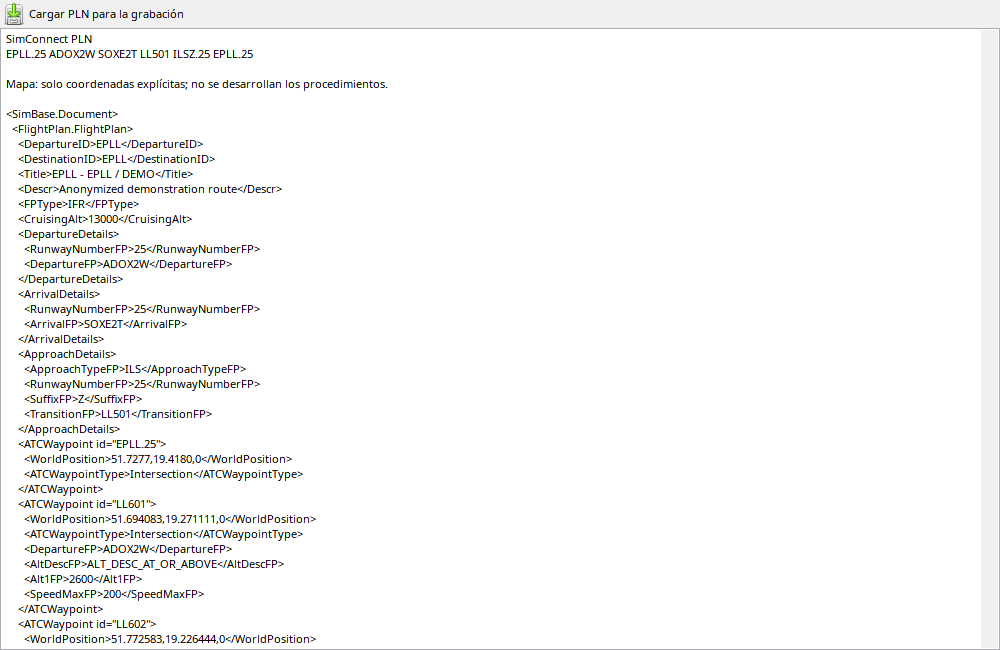

Leer plan y resolver navegación son etapas distintas. EFB aporta aeropuertos/procedimientos; facility añade geometría y restricciones guardadas. ADOX2W no contiene todas las coordenadas. SimBrief puede identificar puntos anónimos, pero no se inventan restricciones ausentes. La ruta resuelta funciona sin conexión.
Muestra el plan guardado, no edita el FMS.
| Opción / acción | Funcionamiento y limitaciones |
|---|---|
| Captura | Tras empezar vuelo lee EFB/SimConnect, resuelve posiciones/procedimientos con facility y guarda el resultado. |
| Aeropuertos | Salida/destino pueden conocerse antes del arranque. UNKNOWN indica datos ausentes o no resueltos entonces. |
| Importar PLN | Adjunte el PLN y compruebe aeropuertos/fuente antes de interpretar la capa. |
| Restricciones | Velocidad, altitud, posición y función cuando existen. El plan no demuestra autorización ATC. |
| Offline | Snapshots guardados sin consultar de nuevo MSFS; textos/puntos antiguos no siempre permiten expandir procedimientos. |
